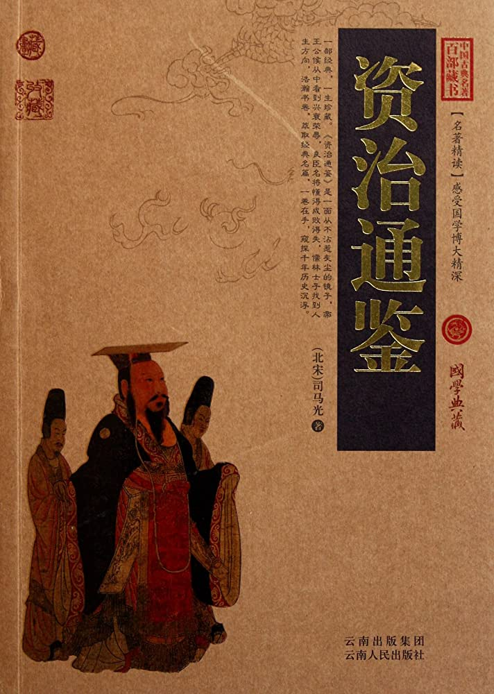

第287卷#

【后汉纪二】起强圉协洽五月，尽著雍涒滩二月，不满一年。
高祖睿文圣武昭肃孝皇帝中天福十二年（丁未，公元九四七年）
五月，乙酉塑，永康王兀欲召延寿及张砺、和凝、李崧、冯道于所馆饮酒。兀欲妻素以兄事延寿，兀欲从容谓延寿曰：“妹自上国来，宁欲见之乎？”延寿欣然与之俱入。良久，兀欲出，谓砺等曰：“燕王谋反，适已锁之矣。”又曰：“先帝在汴时，遗我一筹，许我知南朝军国。近者临崩，别无遗诏。而燕王擅自知南朝军国，岂理邪！”下令：“延寿亲党，皆释不问。”间一日，兀欲至待贤馆受蕃、汉官谒贺，笑谓张砺等曰：“燕王果于此礼上，吾以铁骑围之，诸公亦不免矣。”
后数日，集蕃、汉之臣于府署，宣契丹主遗制。其略曰：“永康王，大圣皇帝之嫡孙，人皇王之长子，太后钟爱，群情允归，可于中京即皇帝位。”于是始举哀成服。既而易吉服见群臣，不复行丧，歌吹之声不绝于内。
辛巳，以绛州防御使王晏为建雄节度使。
帝集群臣庭议进取，诸将咸请出师井陉，攻取镇、魏，先定河北，则河南拱手自服。帝欲自石会趋上党，郭威曰：“虏主虽死，党众犹盛，各据坚城。我出河北，兵少路迂，傍无应援，若群虏合势，共击我军，进则遮前，退则邀后，粮饷路绝，此危道也。上党山路险涩，粟少民残，无以供亿，亦不可由。近者陕、晋二镇，相继款附，引兵从之，万无一失，不出两旬，洛、汴定矣。”帝曰：“卿言是也。”苏逢吉等曰：“史弘肇大军已屯上党，群虏继遁，不若出天井，抵孟津为便。”司天奏：“太岁在午，不利南行。宜由晋、绛抵陕。”帝从之。辛卯，诏以十二日发北京，告谕诸道。
甲午，以太原尹崇为北京留守，以赵州刺史李存瑰为副留守，河东幕僚真定李骧为少尹，牙将太原蔚进为马步指挥使以佐之。存瑰，唐庄宗之从弟也。
是日，刘晞弃洛阳，奔大梁。
武安节度副使、天策府都尉、领镇南节度使马希广，楚文昭王希范之母弟也，性谨顺，希范爱之，使判内外诸司事。壬辰夜，希范卒，将佐议所立。都指挥所张少敌，都押牙袁友恭，以武平节度使知永州事希萼，于希范诸弟为最长，请立之。长直都指挥使刘彦瑫、天策府学士李弘皋、邓懿文、小门使杨涤皆欲立希广。张少敌曰：“永州齿长而性刚，必不为都尉之下明矣。必立都尉，当思长策以制永州，使帖然不动则可。不然，社稷危矣。”彦瑫等不从。天策府学士拓跋恒曰：“三十五郎虽判军府之政，然三十郎居长，请遣使以礼让之。不然，必起争端。”彦瑫等皆曰：“今日军政在手，天与不取，使它人得之，异日吾辈安所自容乎！”希广懦弱，不能自决。乙未，彦瑫等称希范遗命，共立之。张少敌退而叹曰：“祸其始此乎！”与拓跋恒皆称疾不出。
丙申，帝发太原，自阴地关出晋、绛。
丁酉，史弘肇奏克泽州。始，弘肇攻泽州，刺史翟令奇固守不下。帝以弘肇兵少，欲召还。苏逢吉、杨邠曰：“今陕、晋、河阳皆已向化，崔廷勋、耿崇美朝夕遁去；若召弘肇还，则河南人心动摇，虏势复壮矣。”帝未决，使人谕指于弘肇。弘肇曰：“兵已及此，势如破竹，可进不可退。”与逢吉等议合。帝乃从之。弘肇遣部将李万超说令奇，令奇乃降。弘肇以万超权知泽州。
崔廷勋、耿崇美、奚王拽剌合兵逼河阳，张遇帅众数千救之，战于南阪，败死。武行德出战，亦败，闭城自守。拽剌欲攻之，廷勋曰：“今北军已去，得此何用！且杀一夫犹可惜，况一城乎！”闻弘肇已得泽州，乃释河阳，还保怀州。弘肇将至，廷勋等拥众北遁，过卫州，大掠而去。契丹在河南者相继北去，弘肇引兵与武行德合。弘肇为人，沉毅寡言，御众严整，将校小不从命，立挝杀之。士卒所过，犯民田及系马于树者，皆斩之。军中惕息，莫敢犯令，故所向必克。帝自晋阳安行入洛及汴，兵不血刃，皆弘肇之力也。帝由是倚爱之。
辛丑，帝至霍邑，遣使谕河中节度使赵匡赞，仍以契丹囚其父延寿告之。
滋德宫有宫人五十馀人，萧翰欲取之，宦者张环不与。翰破锁夺宫人，执环，烧铁灼之，腹烂而死。
初，翰闻帝拥兵而南，欲北归。恐中国无主，必大乱，己不得从容而去。时唐明宗子许王从益与王淑妃在洛阳，翰遣高谟翰迎之，矫称契丹主命，又以从益知南朝军国事，召己赴恒州。淑妃、从益匿于徽陵下宫，不得已而出。至大梁，翰立以为帝，帅诸酋长拜之，以礼部尚书王松、御史中丞赵远为宰相，前宣徽使甄城翟光鄴为枢密使，左金吾大将军王景崇为宣徽使，以北来指挥使刘祚权侍卫亲军都指挥使，充在京巡检。松，徽之子也。百官谒见淑妃，淑妃泣曰：“吾母子单弱如此，而为诸公所推，是祸吾家也！”翰留燕兵千人守诸门，为从益宿卫。壬寅，翰及刘晞辞行，从益饯于北郊。遣使召高行周于宋州，武行德于河阳，皆不至。淑妃惧，召大臣谋之曰：“吾母子为萧翰所逼，分当灭亡。诸公无罪，宜早迎新主，自求多福，勿以吾母子为意！”众感其言，皆未忍叛去。或曰：“今集诸营，不减五千，与燕兵并力坚守一月，北救必至。”淑妃曰：“吾母子亡国之馀，安敢与人争天下！不幸至此，死生惟人所裁。若新主见察，当知我无所负。今更为计画，则祸及他人，阖城涂炭，终何益乎！”众犹欲拒守，三司使文安刘审交曰：“余燕人，岂不为燕兵计！顾事有不可如何者。今城中大乱之馀，公私穷竭，遗民无几，若复受围一月，无噍类矣。愿诸公勿复言，一从太妃处分。”乃用赵远、翟光鄴策，称梁王，知军国事。遣使奉表称臣迎帝，请早赴京师，仍出居私第。
甲辰，帝至晋州。
契丹主兀欲以契丹主德光有子在国，己以兄子袭位，又无述律太后之命，擅自立，内不自安。
初，契丹主阿保机卒于勃海，述律太后杀酋长及诸将凡数百人。契丹主德光复卒于境外，酋长诸将惧死，乃谋奉契丹主兀欲勒兵北归。契丹主以安国节度使麻荅为中京留守，以前武州刺史高奉明为安国节度使。晋文武官及士卒悉留于恒州，独以翰林学士徐台符、李澣及后宫、宦者、教坊人自随。乙巳，发真定。
帝之即位也，绛州刺史李从朗与契丹将成霸卿等拒命，帝遣西南面招讨使、护国节度使白文珂攻之，未下。帝至城下，命诸军四布而勿攻，以利害谕之。戊申，从朗举城降。帝命亲将分护诸门，士卒一人毋得入。以偏将薛琼为防御使。
辛亥，帝至陕州，赵晖自御帝马而入。壬子，至石壕，汴人有来迎者。六月，甲寅朔，萧翰至恒州，与麻荅以铁骑围张砺之第。砺方卧病，出见之，翰数之曰：“汝何故言于先帝，云胡人不可以为节度使？又，吾为宣武节度使，且国舅也，汝在中书乃帖我！又，先帝留我守汴州，令我处宫中，汝以为不可。又，谮我及解里于先帝，云解里好掠人财，我好掠人子女。今我必杀汝！”命锁之。砺抗声曰：“此皆国家大体，吾实言之。欲杀即杀，奚以锁为！”麻荅以大臣不可专杀，力救止之，翰乃释之。是夕，砺愤恚而卒。
崔廷勋见麻荅，趋走拜，起，跪而献酒，麻荅踞而受之。
乙卯，帝至新安，西京留司官悉来迎。
吴越忠献王弘佐卒。遗令以丞相弘倧为镇海、镇东节度使兼侍中。
丙辰，帝至洛阳，入居宫中，汴州百官奉表来迎。诏谕以受契丹补署者皆勿自疑，聚其告牒而焚之。赵远更名上交。命郑州防御使郭从义先入大梁清宫，密令杀李从益及王淑妃。淑妃且死，曰：“吾儿为契丹所立，何罪而死！何不留之，使每岁寒食，以一盂麦饭洒明宗陵乎！”闻者泣下。
戊午，帝发洛阳。枢密院吏魏仁浦自契丹逃归，见于巩。郭威问以兵数及故事，仁浦强记精敏，威由是亲任之。仁浦，卫州人也。
辛酉，汴州百官窦贞固等迎于荥阳。甲子，帝至大梁，晋之籓镇相继来降。
丙寅，吴越王弘倧袭位。
戊辰，帝下诏大赦。凡契丹所除节度使，下至将吏，各安职任，不复变更。复以汴州为东京，改国号曰汉，仍称天福年，曰：“余未忍忘晋也。”复青、襄、汝三节度。壬申，以北京留守崇为河东节度使，同平章事。
契丹述律太后闻契丹主自立，大怒，发兵拒之。契丹主以伟王为前锋，相遇于石桥。初，晋侍卫马军都指挥使李彦韬从晋主北迁，隶述律太后麾下，太后以为排陈使。彦韬迎降于伟王，太后兵由是大败。契丹主幽太后于阿保机墓。改元天禄，自称天授皇帝，以高勋为枢密使。契丹主慕中华风俗，多用晋臣，而荒于酒色，轻慢诸酋长，由是国人不附，诸部数叛，兴兵诛讨，故数年之间，不暇南寇。
初，契丹主德光命奉国都指挥使南宫王继弘、都虞候樊晖以所部兵戍相州，彰德节度使高唐英善待之。戍兵无铠仗，唐英以铠仗给之，倚信如亲戚。唐英闻帝南下，举镇请降。使者未返，继弘、晖杀唐英。继弘自称留后，遣使告云唐英反覆，诏以继弘为彰德留后。庚辰，以晖为磁州刺史。安国节度使高奉明闻唐英死，心不自安，请于麻荅，署马步都指挥使刘鐸为节度副使，知军府事，身归恒州。帝遣使告谕荆南。高从诲上表贺，且求郢州，帝不许。及加恩使至，拒而不受。
唐主闻契丹主德光卒，萧翰弃大梁去，下诏曰：“乃眷中原，本朝故地。”以左右卫圣统军、忠武节度使、同平章事李金全为北面行营招讨使，议经略北方。闻帝已入大梁，遂不敢出兵。
秋，七月，甲午，以马希广为天策上将军、武安节度使、江南诸道都统，兼中书令，封楚王。
或传赵延寿已死。郭威言于帝曰：“赵匡赞，契丹所署，今犹在河中，宜遣使吊祭，因起复移镇。彼既家国无归，必感恩承命。”从之。会鄴都留守、天雄节度使兼中书令杜重威、天平节度使兼侍中李守贞皆奉表归命。重威仍请移它镇。归德节度使兼中书令高行周入朝，丙申，徙重威为归德节度使，以行周代之；守贞为护国节度使，加兼中书令；徙护国节度使赵匡赞为晋昌节度使。后二年，延寿始卒于契丹。
吴越王弘倧以其弟台州刺史弘亻叔同参相府事。
李达以其弟通知福州留后，自诣钱唐见吴越王弘倧，弘倧承制加达兼侍中，更其名曰孺赟。既而孺赟悔惧，以金笋二十株及杂宝赂内牙统军使胡进思，求归福州。进思为之请，弘倧从之。
杜重威自以附契丹，负中国，内常疑惧。及移镇制下，复拒而不受，遣其子弘璲质于麻荅以求援。赵延寿有幽州亲兵二千在恒州，指挥使张琏将之，重威请以守魏。麻荅遣其将杨衮将契丹千五百人及幽州兵赴之。闰月，庚午，诏削夺重威官爵，以高行周为招讨使，镇宁节度使慕容彦超副之，以讨重威。
辛未，杨邠、郭威、王章皆为正使。时兵荒之馀，公私匮竭，北来兵与朝廷兵合，顿增数倍。章白帝罢不急之务，省无益之费以奉军，用度克赡。
庚辰，制建宗庙。太祖高皇帝，世祖光武皇帝，皆百世不迁。又立四亲庙，追尊谥号。凡六庙。
麻荅贪猾残忍，民间有珍货、美妇女，必夺取之。又捕村民，诬以为盗，披面，抉目，断腕，焚炙而杀之，欲以威众。常以其具自随，左右前后悬人肝、胆、手、足，饮食起居于其间，语笑自若。出入或被黄衣，用乘舆，服御物，曰：“兹事汉人以为不可，吾国无忌也。”又以宰相员不足，乃牒冯道判弘文馆，李崧判史馆，和凝判集贤，刘昫判中书，其僭妄如此。然契丹或犯法，无所容贷，故市肆不扰。常恐汉人亡去，谓门者曰：“汉有窥门者，即断其首以来。”
麻荅遣使督运于洺州，洺州防御使薛怀让闻帝入大梁，杀其使者，举州降。帝遣郭从义将兵万人会怀让攻刘鐸于邢州，不克，鐸请兵于麻荅，麻荅遣其将杨安及前义武节度使李殷将千骑攻怀让于洺州。怀让婴城自守，安等纵兵大掠于邢、洺之境。契丹所留兵不满二千，麻荅令所司给万四千人食，收其馀以自入。麻荅常疑汉兵，且以为无用，稍稍废省，又损其食以饲胡兵。众心怨愤，闻帝入大梁，皆有南归之志。前颍州防御使何福进，控鹤指挥使太原李荣，潜结军中壮士数十人谋攻契丹，然畏契丹尚强，犹豫未发。会杨衮、杨安等军出，契丹留恒州者才八百人，福进等遂决计，约以击佛寺钟为号。
辛巳，契丹主兀欲遣骑至恒州，召前威胜节度使兼中书令冯道、枢密使李崧、左仆射和凝等，会葬契丹主德光于木叶山。道等未行，食时，钟声发。汉兵夺契丹守门者兵，击契丹，杀十馀人，因突入府中。李荣先据甲库，悉召汉兵及市人，以铠仗授之。焚牙门，与契丹战。荣召诸将并力，护圣左厢都指挥使、恩州团练使白再荣狐疑，匿于别室，军吏以佩刀决幕，引其臂，再荣不得已而行。诸将继至，烟火四起，鼓噪震地。麻荅等大惊，载宝货家属，走保北城。而汉兵无所统壹，贪狡者乘乱剽掠，懦者窜匿。八月，壬午朔，契丹自北门入，势复振，汉民死者二千馀人。前磁州刺史李谷恐事不济，请冯道、李崧、和凝至战所慰勉士卒，士卒见道等至，争自奋。会日暮，有村民数千噪于城外，欲夺契丹宝货、妇女，契丹惧而北遁，麻荅、刘晞、崔廷勋皆奔定州，与义武节度使邪律忠合。忠，即郎五也。
冯道等四出安抚兵民，众推道为节度使。道曰：“我，书生也，当奏事而已，宜择诸将为留后。”时李荣功最多，而白再荣位在上，乃以再荣权知留后，具以状闻，且请援兵。帝遣左飞龙使李彦从将兵赴之。白再荣贪昧，猜忌诸将。奉国厢主华池王饶恐为再荣所并，诈称足疾，据东门楼，严兵自卫。司天监赵延乂善于二人，往来谕释，始得解。再荣以李崧、和凝久为相，家富，遣军士围其第求赏给，崧、凝各以家财与之，又欲杀崧、凝以灭口。李谷往见再荣，责之曰：“国亡主辱，公辈握兵不救。今仅能逐一虏将，镇民死者近三千人，岂独公之力邪！才得脱死，遽欲杀宰相，新天子若诘公专杀之罪，公何辞以对？”再荣惧而止。又欲率民财以给军，谷力争之，乃止。汉人尝事麻荅者，再荣皆拘之以取其财，恒人以其贪虐，谓之“白麻荅”。
杨衮至邢州，闻麻荅被逐，即日北还，杨安亦遁去，李殷以其众来降。
庚寅，以薛怀让为安国节度使。刘鐸闻麻荅遁去，举邢州降；怀让诈云巡检，引兵向邢州，鐸开门纳之，怀让杀鐸，以克复闻。朝廷知而不问。
辛卯，复以恒州顺国军为镇州成德军。乙未，以白再荣为成德留后。逾年，始以何福进为曹州防御使，李荣为博州刺史。
敕：“盗贼毋问赃多少皆抵死。”时四方盗贼多，朝廷患之，故重其法，仍分命使者逐捕。苏逢吉自草诏，意云：“应贼盗，并四邻同保，皆全族处斩。”众以为：“盗犹不可族，况邻保乎！”逢吉固争，不得已，但省去“全族”字。由是捕贼使者张令柔杀平阴十七村民。
逢吉为人，文深好杀。在河东幕府，帝尝令静狱以祈福，逢吉尽杀狱囚还报。及为相，朝廷草创，帝悉以军旅之事委杨邠、郭威，百司庶务委逢吉及苏禹珪。二相决事，皆出胸臆，不拘旧制。虽事无留滞，而用舍黜陟，惟其所欲。帝方倚信之，无敢言者。逢吉尤贪诈，公求货财，无所顾避。继母死，不为服；庶兄自外至，不白逢吉而见诸子，逢吉怒，密语郭威，以他事杖杀之。
楚王希广庶弟天策左司马希崇，性狡险，阴遗兄希萼书，言刘彦瑫等违先王之命，废长立少，以激怒之。希萼自永州来奔丧，乙巳，至趺石，彦瑫白希广遣侍从都指挥使周廷诲等将水军逆之，命永州将士皆释甲而入，馆希萼于碧湘宫，成服于其次，不听入与希广相见。希萼求示还朗州，周廷诲劝希广杀之。希广曰：“吾何忍杀兄！宁分潭、朗而治之。”乃厚赠希萼，遣还朗州。希崇常为希萼诇希广，语言动作，悉以告之，约为内应。
契丹之灭晋也，驱战马二万匹归其国。至是汉兵乏马，诏市士民马于河南诸道不经剽掠者。
制以钱弘倧为东南兵马都元帅、镇海、镇东节度使兼中书令、吴越王。
高从诲闻杜重威叛，发水军数千袭襄州，山南东道节度使安审琦击却之。又寇郢州，刺史尹实大破之。乃绝汉，附于唐、蜀。
初，荆南介居湖南、岭南、福建之间，地狭兵弱，自武信王季兴时，诸道入贡过其境者，多掠夺其货币。及诸道移书诘让，或加以兵，不得已复归之，曾不为愧。及从诲立，唐、晋、契丹、汉更据中原，南汉、闽、吴、蜀皆称帝。从诲利其赐予，所向称臣，诸国贱之，谓之“高无赖”。
唐主以太傅兼中书令宋齐丘为镇南节度使。
南汉主恐诸弟与其子争国，杀齐王弘弼、贵王弘道、定王弘益、辨王弘济、同王弘简、益王弘建、恩王弘伟、宜王弘照，尽杀其男，纳其女充后宫。作离宫千馀间，饰以珠宝，设镬汤、铁床、刳剔等刑，号“生地狱”。尝醉，戏以瓜置乐工之颈试剑，遂断其头。初，帝与吏部尚书窦贞固俱事晋高祖，雅相知重，及即位，欲以为相，问苏逢吉：“其次谁可相者？”逢吉与翰林学士李涛善，因荐之，曰：“昔涛乞斩张彦译，陛下在太原，尝重之，此可相也。”会高行周、慕容彦超共讨杜重威于鄴都，彦超欲急攻城，行周欲缓之以待其弊。行周女为重威子妇，彦超扬言：“行周以女故，爱贼不攻。”由是二将不协。帝恐生他变，欲自将击重威，意未决。涛上疏请亲征。帝大悦，以涛有宰相器。九月，甲戌，加逢吉左仆射兼门下侍郎，苏禹珪右仆射兼中书侍郎，贞固司空兼门下侍郎，涛户部尚书兼中书侍郎，并同平章事。戊寅，诏幸澶、魏劳军，以皇子承训为东京留守。
冯道、李崧、和凝自镇州还。己卯，以崧为太子太傅，凝为太子太保。
庚辰，帝发大梁。
晋昌节度使赵匡赞恐终不为朝廷所容，冬，十月，遣使降蜀，请自终南山路出兵应援。
戊戌，帝至鄴都城下，舍于高行周营。行周言于帝曰：“城中食未尽，急攻，徒杀士卒，未易克也。不若缓之，彼食尽自溃。”帝然之。慕容彦超数因事陵轹行周，行周泣诉于执政，掏粪壤实其口，苏逢吉、杨邠密以白帝。帝深知彦超之曲，犹命二臣和解之。又召彦超于帐中责之，且使诣行周谢。
杜重威声言车驾至即降，帝遣给事中陈观往谕指，重威复闭门拒之。城中食浸竭，将士多出降者。慕容彦超固请攻城，帝从之。丙午，亲督诸将攻城，自寅至辰，士卒伤者万馀人，死者千馀人，不克而止。彦超乃不敢复言。
初，契丹留幽州兵千五百人戍大梁。帝入大梁，或告幽州兵将为变，帝尽杀之于繁台之下。乃围鄴都，张琏将幽州兵二千助重威拒守，帝屡遣人招谕，许以不死。琏曰：“繁台之卒，何罪而戮？今守此，以死为期耳。”由是城久不下。十一月，丙辰，内殿直韩训献攻城之具，帝曰：“城之所恃者，众心耳。众心苟离，城无所保，用此何为！”
杜重威之叛，观察判官金乡王敏屡泣谏，不听。及食竭力尽，甲戌，遣敏奉表出降。乙亥，重威子弘琏来见；丙子，妻石氏来见。石氏，即晋之宋国长公主也，帝复遣入城。丁丑，重威开门出降，城中馁死者什七八，存者皆尪瘠无人状。张琏先邀朝廷信誓，诏许以归乡里。及出降，杀琏等将校数十人，纵其士卒北归。将出境，大掠而去。郭威请杀重威牙将百馀人，并重威家赀籍之以赏战士，从之。以重威为太傅兼中书令、楚国公。重威每出入，路人往往掷瓦砾诟之。
臣光曰：汉高祖杀幽州无辜千五百人，非仁也；诱张琏而诛之，非信也；杜重威罪大而赦之，非刑也。仁以合众，信以行令，刑以惩奸，失此三者，何以守国！其祚运之不延也，宜哉！
高行周以慕容彦超在澶州，固辞鄴都。己卯，以忠武节度使史弘肇领归德节度使，兼侍卫马步都指挥使，义成节度使刘信领忠武节度使兼侍卫马步副都指挥使，徙彦超为天平节度使，并加同平章事。
吴越王弘踧大阅水军，赏赐倍于旧。胡进思固谏，弘倧怒，投笔水中，曰：“吾之财与士卒共之，奚多少之限邪！”
十二月，丙戌，帝发鄴都。
蜀主遣雄武都押牙吴崇恽，以枢密使王处回书招凤翔节度使侯益。庚寅，以山南西道节度使兼中书令张虔钊为北面行营招讨安抚使，雄武节度使何重建副之，宣徽使韩保贞为都虞候，共将兵五万，虔钊出散关，重建出陇州，以击凤翔。奉銮肃卫都虞候李廷珪将兵二万出子午谷，以援长安。诸军发成都，旌旗数十里。
辛卯，皇子开封尹承训卒。承训孝友忠厚，达于从政，人皆惜之。
癸巳，帝至大梁。
威武节度使李孺赟与吴越戍将鲍修让不协，谋袭杀修让，复以福州降唐。修让觉之，引兵攻府第，是日，杀孺赟，夷其族。
乙未，追立皇子承训为魏王。
侯益请降于蜀，使吴崇恽持兵籍、粮帐西还，与赵匡赞同上表请出兵平定关中。
己酉，鲍修让传李孺赟首至钱塘，吴越王弘倧以丞相山阴吴程知威武节度事。
吴越王弘倧，性刚严，愤忠献王弘佐时容养诸将，政非己出，及袭位，诛杭、越侮法吏三人。
内牙统军使胡进思恃迎立功，干预政事；弘倧恶之，欲授以一州，进思不可。进思有所谋议，弘倧数面折之。进思还家，设忠献王位，被发恸哭。民有杀牛者，吏按之，引人所市肉近千斤。弘倧问进思：“牛大者肉几何？”对曰：“不过三百斤。”弘倧曰：“然则吏妄也。”命按其罪。进思拜贺其明。弘亻宗曰：“公何能知其详？”进思踧躇对曰：“臣昔未从军，亦尝从事于此。”进思以弘倧为知其素业，故辱之，益恨怒。进思建议遣李孺赟归福州，及孺赟叛，弘倧责之，进思愈不自安。弘倧与内牙指挥使何承训谋逐进思，又谋于内都监使水丘昭券，昭券以为进思党盛难制，不如容之，弘倧犹豫未决。承训恐事泄，反以谋告进思。
庚戌晦，弘倧夜宴将吏，进思疑其图己，与其党谋作乱，帅亲兵百人戎服执兵入见于天策堂，曰：“老奴无罪，王何故图之？”弘倧叱之不退，左右持兵者皆愤怒。弘倧猝愕不暇发言，趋入义和院。进思锁其门，矫称王命，告中外云：“猝得风疾，传位于同参相府事弘亻叔。”进思因帅诸将迎弘亻叔于私第，且召丞相元德昭。德昭至，立于帘外不拜，曰：“俟见新君。”进思亟出褰帘，德昭乃拜。进思称弘倧之命，承制授弘亻叔镇海、镇东节度使兼侍中。弘亻叔曰：“能全吾兄，乃敢承命。不然，当避贤路。”进思许之。弘亻叔始视事。
进思杀水丘昭券及进侍鹿光铉。光弦，弘倧之舅也。进思之妻曰：“它人犹可杀，昭券，君子也，奈何害之！”
是岁，唐主以羽林大将军王延政为安化节度使、鄱阳王，镇饶州。
高祖睿文圣武昭肃孝皇帝中乾祐元年（戊申，公元九四八年）
春，正月，乙卯，大赦，改元。
帝以赵匡赞、侯益与蜀兵共为寇，患之。会回鹘入贡，诉称为党项所阻，乞兵应接。诏右卫大将军王景崇、将军齐藏珍将禁军数千赴之，因使之经略关西。
晋昌节度判官李恕，久在赵延寿幕下，延寿使之佐匡赞。匡赞将入蜀，恕谏曰：“燕王入胡，岂所愿哉！今汉家新得天下，方务招怀，若谢罪归朝，必保富贵。入蜀非全计也，‘蹄涔不容尺鲤’，公必悔之。”匡赞乃遣恕奉表请入朝。景崇等未行而恕至，帝问恕：“匡赞何为附蜀？”对曰：“匡赞自以身受虏官，父在虏庭，恐陛下未之察，故附蜀求苟免耳。臣以为国家必应存抚，故遣臣来祈哀。”帝曰：“匡赞父子，本吾人也，不幸陷虏。今延寿方坠槛阱，吾何忍更害匡赞乎！”即听其入朝。侯益亦请赴二月四日圣寿节上寿。景崇等将行，帝召入卧内，敕之曰：“匡赞、益之心，皆未可知。汝至彼，彼已入朝，则勿问；若尚迁延顾望，当以便宜从事。”
己未，帝更名暠。
以前威胜节度使冯道为太师。
壬戌，吴越王弘亻叔迁故王弘倧于衣锦军私第，遣匡武都头薛温将亲兵卫之。潜戒之曰：“若有非常处分，皆非吾意，当以死拒之。”
帝自魏王承训卒，悲痛过甚。甲子，始不豫。
赵匡赞不俟李恕返命，已离长安。丙子，入见。王景崇等至长安，闻蜀兵已入秦川，以兵少，发本道及赵匡赞牙兵千馀人同拒之。景崇恐匡赞牙兵亡逸，欲文其面，微露风旨。军校赵思绾，首请自文其面以帅下，景崇悦。齐藏珍窃言曰：“思绾凶暴难制，不如杀之。”景崇不听。思绾，魏州人也。蜀李廷珪将至长安，闻赵匡赞已入朝，欲引归，王景崇邀之，败廷珪于子午谷。张虔钊至宝鸡，诸将议不协，按兵未进。侯益闻廷珪西还，因闭壁拒蜀兵，虔钊势孤，引兵夜遁。景崇帅凤翔、陇、邠、泾、鄜、坊之兵追败蜀兵于散关，俘将卒四百人。
丁丑，帝大渐，杨邠忌侍卫马军都指挥使、忠武节度使刘信，立遣之镇。信不得奉辞，雨泣而去。
帝召苏逢吉、杨邠、史弘肇、郭威入受顾命，曰：“余气息微，不能多言。承祐幼弱，后事托在卿辈。”又曰：“善防重威。”是日，殂于万岁殿，逢吉等秘不发丧。庚辰，下诏，称：“重威父子，因朕小疾，谤议摇众，并其子弘璋、弘琏、弘璨皆斩之。晋公主及内外亲族，一切不问。”磔重威尸于市，市人争啖其肉，吏不能禁，斯须而尽。
二月，辛巳朔，立皇子左卫大将军、大内都点检承祐为周王，同平章事。有顷，发丧，宣遗制，令周王即皇帝位。时年十八。
蜀韩保贞、庞福诚引兵自陇州还，要何重建俱西。是日，保贞等至秦州，分兵守诸门及衢路，重建遂入于蜀。
丁亥，尊皇后曰皇太后。
朝廷知成德留后白再荣非将帅才，庚寅，以前建雄留后刘在明代之。
癸巳，大赦。
吴越内牙指挥使何承训复请诛胡进思及其党。吴越王弘亻叔恶其反覆，且惧召祸，乙未，执承训，斩之。进思屡请杀废王弘倧以绝后患，弘亻叔不许。进思诈以王命密令薛温害之。温曰：“仆受命之日，不闻此言，不敢妄发。”进思乃夜遣其党方安等二人俞垣而入，弘倧阖户拒之，大呼求救；温闻之，率众而入，毙安等于庭中。入告弘亻叔，弘亻叔大惊，曰：“全吾兄，汝之力也。”弘亻叔畏忌进思，曲意下之。进思亦内忧惧，未几，疽发背卒。弘倧由是获全。
诏以王景崇兼凤翔巡检使。景崇引兵至凤翔，侯益尚未行，景崇以禁兵分守诸门。或劝景崇杀益，景崇以受先朝密旨，嗣主未之知，或疑于专杀，犹豫未决。益闻之，不告景崇而去，景崇悔，自诟。戊戌，益入朝，隐帝问：“何故召蜀军？”对曰：“臣欲诱致而杀之。”帝哂之。
蜀张虔钊自恨无功。癸卯，至兴州，惭忿而卒。
侍卫马步都指挥使、同平章事史弘肇遭母丧，不数日，复出朝参。